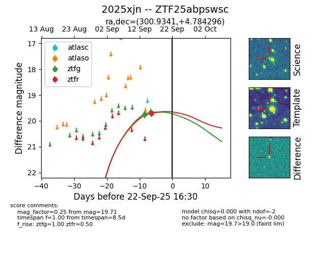
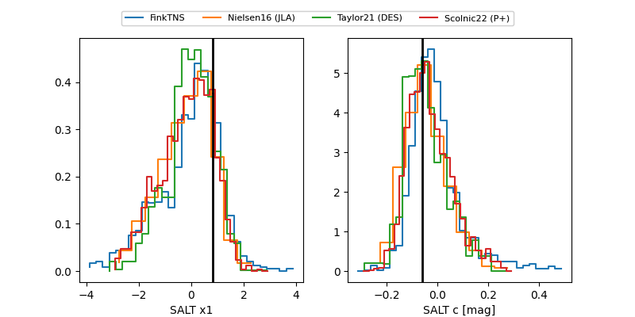

FINK: ZTF25abpswsc
Lasair: ZTF25abpswsc
ALeRCE: ZTF25abpswsc
TNS: 2025xjn
YSE: 2025xjn
ZTF25abpswsc (ztf,fink)
2025xjn (tns,yse)
equatorial (ra, dec) = (300.9341,+4.78430)
galactic (l, b) = (45.7306,-13.71724)


last ztfg=19.67, ztfr=19.71
2 ztfg, 1 ztfr detections